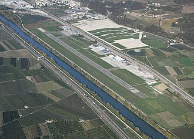
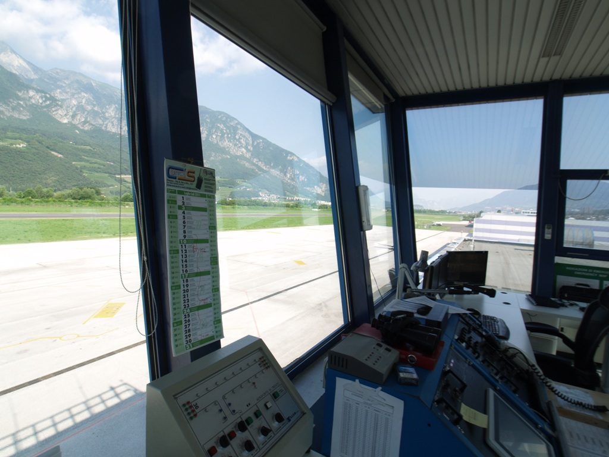
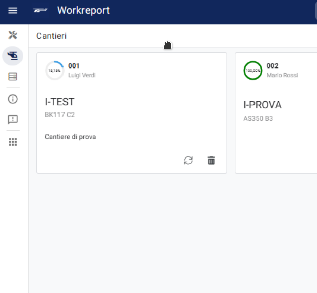

Resoconto delle esperienze di alternanza
scuola–lavoro del triennio

STAGE REPORT · Sebastian Piffer
SLIDE 01 / 09
01 · L'Ente Ospitante
Aeroporto
"Gianni Caproni" di Trento
Unico aeroporto della provincia di Trento, è
sede anche di diverse attività collegate al
mondo dell'aviazione
Fino a 50 movimenti al giorno tra
elicotteri, aerei e alianti
Operatori Torre con doppio ruolo:
FISO e
Operatori Unici
Aeroportuali

AEROPORTO CAPRONI · PROFILO AZIENDALE
SLIDE 02 / 09
01 · Aeroporto Caproni
Attività svolte in
Torre di Controllo
Compilazione
strip aeronautiche,
raccolta dati meteo e gestione piani di
volo.
Monitoraggio di pista e strutture
antincendio per prevenzione
FOD.
Spiegazione delle strutture di supporto
al traffico aereo, come il
VOR DME.
AEROPORTO CAPRONI · ATTIVITÀ SVOLTE
SLIDE 03 / 09
01 · Competenza
Competenze acquisite con i
FISO
METAR & TAF
Lettura e interpretazione dei bollettini
meteo METAR e TAF e analisi delle
condizioni dell'aeroporto
GESTIONE TRAFFICO
Analisi piani di volo, comunicazioni
radio e coordinamenti procedurali con
gli altri scali.
FOTO 2 — AVVICINAMENTO STRUMENTALE
PINS
AEROPORTO CAPRONI · COMPETENZE ACQUISITE
SLIDE 04 / 09
02 · L'Ente Ospitante
Airbus Helicopters Italia
Azienda di riferimento per la manutenzione e
la modifica degli elicotteri Airbus che fa
servizio di CAMO per tutto il sud Europa
Interventi di
manutenzione ordinaria e
straordinaria
su elicotteri Airbus e motori SAFRAN.
Sezione dedicata agli
allestimenti speciali:
elisoccorso EMS, forze dell'ordine e
configurazioni speciali.
CENTRO TECNICO · AIRBUS HELICOPTERS HUB
HELICOPTERS ITALIA · PROFILO AZIENDALE
SLIDE 05 / 09
02 · Helicopters Italia
Attività svolte come Maintenance Support
Mappatura dei processi dei
Workreport tecnici e
analisi delle possibilità di
ottimizzazione
Progettazione di una
web app per sostituire
i fogli Excel e i documenti, per
ottimizzare le informazioni

HELICOPTERS ITALIA · ATTIVITÀ SVOLTE
SLIDE 06 / 09
02 · Competenza
Competenze acquisite in
Helicopters Italia
MANUTENZIONE AERONAUTICA
Nozioni di processi e regolamenti della
manutenzione aeronautica e dei suoi
requisiti
EFFICIENZA DEI PROCESSI
Comprenione del
flusso delle informazioni
e delle sfide tecniche per ottimizzarne
la gestione
FOTO 1 — NORMATIVE EASA PART-M
FOTO 2 — ROTORI & MOTORI SAFRAN
HELICOPTERS ITALIA · COMPETENZE ACQUISITE
SLIDE 07 / 09
02 · Approfondimento
Progetto aziendale: Digitalizzazione Hangar
Il periodo di stage ha portato a un
assuzione a tempo determinato per il
completamento del progetto della
web app per l'hangar, al
fine di digitalizzare la documentazione,
monitorare i tempi di manutenzione e
facilitare l'accesso alle risorse
documentali e la comunicazione
.jpg)